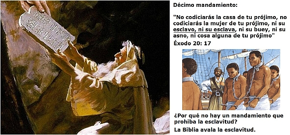

La religión ha secuestrado la moral. Sin duda, todas las religiones se han autoproclamado guardianes de la moral de la sociedad y se han nombrado como los embajadores de su dios para dictarla al mundo. Bajo la excusa de la omnisapiencia y la perfección de dios han blindado sus postulados morales de infalibles y perfectos, y la mayoría de las personas así lo han creído.
Muestra de ello son las declaraciones del Cardenal peruano y miembro del Opus Dei Juan Luis Cipriani Thorne quien en noviembre de 2005 afirmó: “Están aquellos que aceptan la realidad del pecado y aquellos que no la aceptan. No es problema de tolerancia, ni democracia ni pluralismos. Es la fe que me dice: acepto la revelación, la palabra de Dios, la enseñanza de la Iglesia Católica. Al otro lado encontraremos a quienes quieren convalidar al pecado con una forma de pluralidad, de tolerancia, con una expresión del mundo moderno. ¿Por qué? Porque les falta aceptar con humildad que cometemos pecados y esto no es bueno. Ahí está el punto de corte”. No obstante el convencimiento del Cardenal Cipriani, ni él ni clérigo alguno podrá decir que sus opiniones sobre moralidad están basadas en un claro, audible y público mandato del dios en el que creen. No se ha presentado divinidad alguna de forma pública y audible ante toda la humanidad dando declaraciones relativas a la moral sexual y reproductiva, a la eutanasia, el aborto terapéutico y demás temas polémicos. A Cipriani así como a los demás cristianos solo les queda recurrir a la Biblia, a la que llama palabra de Dios, como fuente de la moralidad.

Por lo anterior se debe revisar si la Biblia puede tomarse como guía moral para una sociedad moderna. Sin duda muchos cristianos empezarán con los diez mandamientos que supuestamente Moisés recibió del mismo dios Yahveh. De haber sido este hecho cierto los versículos de Éxodo 20 serían palabras literales dios en la Biblia. Por esto católicos y protestantes le dan un gran valor a los diez mandamientos. Tal como lo ejemplifica la declaración de Les Tohompson, pastor evangélico de Miami en una entrevista en 2008: “Gran parte de la decadencia del mundo de hoy, tiene que ver con que la iglesia dejó de estudiar los Diez Mandamientos y es muy raro que se los mencione en nuestros púlpitos. Esto indica una falla imperdonable. No hemos comprendido la universalidad de la ley de Dios. ¿Dónde es que se determina lo bueno y lo malo? La mejor fuente se encuentra en los Diez Mandamientos.”
Se debe aclarar que los diez mandamientos del catecismo católico no son los mismos que aparecen en la Biblia en Éxodo 20: 1- 17. Los cuatro primeros hablan de la veneración al dios Yahvé (¡no dice nada de Jesús, ni de Trinidad alguna!). Estos mandamientos son: Adorar solo a Yavhé, no hacer imágenes ni adorarlas, no jurar en vano por Yahvé y guardar el Sabbat. De este primer grupo de normas causa especial interés el segundo mandamiento, en el que se prohíbe adorar imágenes: “No te inclinarás a ellas, ni las honrarás; porque yo soy Jehová tu Dios, fuerte, celoso, que visito la maldad de los padres sobre los hijos hasta la tercera y cuarta generación de los que me aborrecen” Éxodo 20: 5.
¿Qué es eso de que Jehová o Yahvé castiga a los hijos, nietos, bisnietos y tataranietos de los que le aborrezcan? ¿Es justo castigar a una descendencia inocente por las faltas de sus padres? En Levítico 19:18 este mismo dios advierte en contra de la venganza: “No te vengarás, ni guardarás rencor a los hijos de tu pueblo, sino amarás a tu prójimo como a ti mismo. Yo Jehová.”
Claramente ambos textos muestran una contradicción moral en el mismo Yahvé, porque en uno pide no tener venganza y en otro amenaza a las generaciones futuras de quien no lo adoren. Pero más allá de la contradicción, lo que me asombra es que en el seno mismo del decálogo se presenta semejante ejemplo de celo y venganza, más propio de un clérigo fanático que de un dios de infinita bondad y misericordia.
Los siguientes seis mandamientos piden honrar a los padres, no matar, no cometer adulterio, no robar, no mentir, y no codiciar los bienes del prójimo. Esto lo toman muchos como absolutos morales, sin matices. ¿Pero qué ocurre, si se requiere mentir para salvar a inocentes? Oskar Schilder urdió un plan basado en mentiras para salvar la vida de muchos judíos durante el régimen nazi. También varios estadounidenses en el siglo XIX escondieron esclavos que huían del sur en su camino al norte de este país y debían mentir para salvarlos. ¿Es eso también una falta moral? ¿Cómo es posible que en dios omnisapiente no previera situaciones semejantes y dijese algo al respecto? Pasa lo mismo con el mandamiento de no matarás. ¿Es inmoral matar al francotirador que desde una azotea está causando asesinatos? El decálogo de Yahvé se queda corto.
Pero, causa curiosidad que el mismo Yahvé viola el sexto mandamiento. Según la Biblia mientras Jehová daba su decálogo, su pueblo elegido hacía un becerro de oro para adorarle (¡Al parecer no les fue suficiente prueba de la existencia de Yahvé el que les hubiese abierto el Mar Rojo!) La Biblia dice que Moisés bajó del monte Sinaí, rompió las tablas escritas por dios “Y él les dijo: Así dice el SEÑOR, Dios de Israel: “Póngase cada uno la espada sobre el muslo, y pasad y repasad por el campamento de puerta en puerta, y matad cada uno a su hermano y a su amigo y a su vecino.” (Éxodo 32: 27).

Bueno, ¿no había dicho el Señor que no es bueno matar? ¿El asesinato es bueno en unos casos y malos en otro? ¿Es algo relativo? ¿No es justamente el relativismo moral lo que tanto critican las iglesias cristianas hoy en día? La Iglesia Católica ha hecho del mandamiento “no matarás” un absoluto y lo ha llevado hasta el extremo de considerar asesinato la muerte de un óvulo fecundado o desconectar a un paciente con muerte cerebral y que solo sobrevive gracias a la asistencia de máquinas.
Pero los adoradores del becerro de oro no fueron los únicos que murieron por orden de Jehová. También en el Pentateuco se ordena matar a los que no guarden el sábado - lo que incluiría a todos los católicos de seguir la Biblia al pie de la letra- también manda matar a todo aquel que cometa incesto, zoofilia, los que practiquen adivinación, a las brujas, a los adoradores de otros dioses, a los homosexuales varones -no dice nada sobre las lesbianas -, a los violadores, a los hijos que maldigan a sus padres, a quienes hagan invitación a adorar a otro dios, y a la mujer que al casarse no resultase virgen. Sobre esto último, la Biblia no establece similar castigo para los varones que no llegasen vírgenes al altar. ¿Machismo? Sin duda.
Pero el mismo dios que prohibió el asesinato permitió el genocidio de los pueblos de Canaán para darle esa tierra a los israelitas: “Cuando Jehová tu Dios te haya introducido en la tierra en la cual entrarás para tomarla, y haya echado de delante de ti a muchas naciones, al heteo, al gergeseo, al amorreo, al cananeo, al ferezeo, al heveo y al jebuseo, siete naciones mayores y más poderosas que tú, y Jehová tu Dios las haya entregado delante de ti, y las hayas derrotado, las destruirás del todo; no harás con ellas alianza, ni tendrás de ellas misericordia” . Deuteronomio 7: 1 - 2.
En el libro de Números capítulo 31 se narra el genocido de los madianitas. En esta historia Moisés, por órdenes del mismo dios que dio el decálogo, manda matar a los madianitas, con excepción de las mujeres vírgenes, las cuales son tomadas como botín de guerra, junto con los metales preciosos y los semovientes. ¿Qué lección para basar nuestra moralidad podemos extraer de este pasaje tan lleno de odio, xenofobia y machismo? De existir el dios de la Biblia se debería acusar de genocidio. ¿Conoce a algunas personas que se hacen llamar “Testigos” de Jehová? Interesante preguntarles que podrían testificar sobre las acciones de su dios en caso de un hipotético juicio por genocidio.
En el primer libro de los Jueces se narra un hecho aún más espeluznante. El profeta Samuel le transmite al rey Saúl de Israel una orden de Jehová para que arrase con los amalecitas: “Así ha dicho Jehová de los ejércitos: Yo castigaré lo que hizo Amalec a Israel al oponérsele en el camino cuando subía de Egipto. Ve, pues, y hiere a Amalec, y destruye todo lo que tiene, y no te apiades de él; mata a hombres, mujeres, niños, y aun los de pecho, vacas, ovejas, camellos y asnos.” 1 Samuel 15: 2-3.
Cosa totalmente injusta ya que varias generaciones habían pasado desde el éxodo hasta ese momento, y por otra parte ¿qué culpa tienen los niños de brazos, las vacas, ovejas, camellos y asnos? ¿Es este libro guía moral para la sociedad actual o es fruto de un pueblo poco civilizado, xenófobo y con parámetros morales similares a otros pueblos de la antigüedad?
Volviendo a los mandamientos es interesante analizar el décimo: “No codiciarás la casa de tu prójimo, no codiciarás la mujer de tu prójimo, ni su esclavo, ni su esclava, ni su buey, ni su asno, ni cosa alguna de tu prójimo”. Éxodo 20: 17. ¿Qué es eso de no codiciar los esclavos del prójimo? ¿Avala el dios de Biblia la esclavitud? Claro que sí. De hecho, el capítulo que le sigue al decálogo contiene las normas para regularla. ¿Y qué es eso de poner a las mujeres como una propiedad del varón, a la par que los bueyes y los asnos? ¿Son estas buenas normas morales para la sociedad actual?
Muchos cristianos actuales ignoran que precisamente por hacer de la Biblia una guía moral los bautistas del sur de Estados Unidos defendieron la esclavitud en los tiempos de Lincoln con la misma fiereza con que hoy toman otros versículos del pentateuco para oponerse a los derechos civiles para gays y lesbianas.
Si tomáramos la Biblia al pie de la letra la esclavitud estaría permitida, seria licito matar a quien trabajase en sábado o a los hinduistas por adorar dioses distintos a Yahvé. ¿Qué atisbo hay en la Biblia de derechos humanos, como los conocemos hoy? Ninguno.
La Biblia contiene buenas normas, tales como “No oprimirás a tu prójimo, ni le robarás. No retendrás el salario del jornalero en tu casa hasta la mañana, No maldecirás al sordo, y delante del ciego no pondrás tropiezo…” Levítico 19: 13-14. Pero, también en el mismo capítulo condena producir mulas, al aparear animales de diferentes especies, tonsurarse la cabeza, cortar la punta de la barba, sembrar el campo con diferentes semillas a la vez, o vestir prendas hechas con mezclas de hilos. En otros capítulos se presentan las prohibiciones de acercarse al templo con la menstruación o de comer sangre. De esta última proscripción los Testigos de Jehová derivaron su objeción moral para aceptar las transfusiones de sangre. ¿Por qué también no consideran algo malo cortarse la barba, o que sus mujeres no anuncien cuando tienen la menstruación para no hacer “inmundos” a quienes las toquen (Levítico 15:19)?
Muchos creyentes no conocen estos textos a pesar de llevar la Biblia consigo todos los domingos, porque los pastores y sacerdotes han seleccionado para sus homilías, sermones, estudios bíblicos o publicaciones algunos versículos bíblicos para enseñarlos como norma moral y otros los han omitido, olvidado o calificado de alegóricos o no válidos para la modernidad, mientras si lo hacen con otros. ¿Por qué? ¿No dice el dios Yahvé “No añadiréis a la palabra que yo os mando, ni disminuiréis de ella, para que guardéis los mandamientos de Jehová vuestro Dios que yo os ordene”. (Deuteronomio 4:2)? Tras la selección de sólo algunos versículos e historias bíblicas a exaltar como ejemplos de moralidad se esconde, sin duda, el criterio y la interpretación humana. Por eso es que, por ejemplo, ya ningún cristiano defiende la esclavitud señalando con su dedo un versículo del Levítico, pero si lo hace para condenar la homosexualidad.
El Corán es un libro igual o peor de intolerante, misógino y violento. Claramente en este se da la orden de matar a todos aquellos que no creen que Alá es dios y Mahoma su profeta. Expresamente se denigra a los judíos y se pide su exterminio. Un verso dice respecto a los infieles: “Matadlos donde quiera que los encontréis y expulsadlos de donde os hayan expulsado. La oposición (a vuestra creencia) es más grave que matar”. Corán 2:191. Y así como este versículo hay otros 108 en los que se pide la guerra contra los no musulmanes. Dentro de los hadices o dichos del profeta se tiene el siguiente versículo: “La hora no se establecerá hasta que se pelea con los judíos, y la piedra detrás de la cual un judío se esconde dirá.” Oh, musulmanes! Hay un judío oculto detrás de mí, así que matadlo.” (Bujari 52:256)

Mahoma tomó por esposa a una niña de nueve años llamada Aisha, siendo sin duda un caso de pedofilia, que muestra además el papel subordinado que el islam le ha dado a la mujer. En definitiva el profeta Mahoma no resultó mejor ejemplo de moralidad que el profeta Samuel o que Moisés.
Precisamente el problema actual de los fundamentalistas islamistas no surge porque lleven el Corán fuera de contexto, como piensan algunos, sino porque precisamente lo obedecen literalmente y lo han hecho guía moral. Como vimos, la Biblia también contiene versículos que piden ejecutar a los no adoradores de Jehová o a los que no guarden su sabbath, pero estas normas ya no llevan a una persecución, no por la obra de los religiosos, sino a pesar de ellos. La superación de la persecución religiosa se logró gracias al humanismo derivado de la Ilustración y la subsiguiente declaración de los derechos del hombre.
Por otra parte, ni en el Corán ni en la Biblia podemos encontrar una deliberación profunda sobre los valores y la moral. Nada que se parezca remotamente a las reflexiones como las hechas por Kant, por ejemplo. Lo cual hace a estas obras altamente sospechosas de ser la obra de un dios sabio y justo.
¿Pero si no los valores no vienen dictados de un dios quiere decir que estos no existen? Los valores existen, pero no son objetivos. Siguiendo a Adela Cortina “Los valores son, cualidades de las cosas, de las acciones de las personas, que nos atraen porque ayudan a hacer el mundo habitable” En ese orden de ideas la honestidad, la responsabilidad, el respeto por el prójimo, la solidaridad, y la justicia, son ejemplo de valores. Añadirían los creyentes la fe como un valor, no así los ateos y librepensadores. Para los creyentes los valores son objetivos, y dios así los ha puesto. Para los creyentes resulta terrible que la moral no viniese de dios. Decía Benedicto XVI en septiembre de 2011: “Cuando las políticas no presuponen o no proponen valores objetivos, el relativismo moral resultante, en vez de trazar el horizonte hacia una sociedad libre, justa y compasiva; tiende a producir frustración, desesperanza, egoísmo y desprecio por la vida y la libertad de los demás”
Como ya se mencionó anteriormente poco de objetivo tiene la interpretación de la Biblia, además que los diferentes credos en diferentes épocas han relativizado las normas bíblicas y sus respectivos castigos. Benedicto XVI ha denominado a la defensa de posturas morales diferentes a las católicas como “dictadura del relativismo”, aunque es doblemente cínica su declaración, ya que si algo caracteriza a la Iglesia Católica es precisamente su comportamiento dictatorial, mostrado claramente en el medioevo y en la España de Franco, y por otro lado, no hay nada más subjetivo en el mundo que el establecimiento de la religión verdadera, junto con la “correcta” interpretación de la voluntad de dios en la Biblia.
Sobre la pretendida objetividad de los valores el ateo Dan Baker puntualizó: “La mayoría de los ateos piensan que los valores morales son reales, pero ello no significa que sean “objetivos”. No pueden serlo. Un valor no es una “cosa”— es una función de la mente (la cual es ella misma una función.) Ser objetivo es existir independientemente de la mente. Por lo tanto, un “valor objetivo” es un oxímoron: la existencia en la mente de algo que es independiente de la mente.”
Pero al no considerarlos objetivos, no significa que el ateo deseche los valores. El ateo debe reflexionar sobre los valores y la forma como estos pueden ayudar a mejorar la sociedad, teniendo en cuenta que con el tiempo nuevas situaciones se presentan.

En tiempos anteriores a la revolución científica nadie se había cuestionado si era moralmente permitido poner fin a la existencia de un paciente que se mantiene con muerte cerebral sin posibilidades de recuperación, así este lo hubiese estipulado previamente, pero que se mantiene con vida gracias a la asistencia de máquinas. Esa discusión pertenece a nuestros tiempos. La Iglesia con su postura de defender la vida humana -no dice nada de los animales no humanos- desde la concepción hasta la “muerte natural” no permite disensión. Pero el librepensador debe considerar además de la vida como valor, el valor de la libertad humana, la dignidad de la existencia y el no sufrir como elementos necesarios en este debate.
¿En qué basa entonces el no creyente su moral? En valores que permiten hacer este mundo un mejor lugar para todos. En evitar el daño innecesario y en el “no hacer a los demás lo que no te gustaría que te hicieran a ti”. Muchos librepensadores han adoptado el sensocentrismo como base para su moralidad. En el sensocentrismo se afirma que todo ser con capacidad para sentir (sintiente), por derecho propio, merece consideración moral y respeto. Esta visión lleva a considerar los derechos de los animales, -cosa que la Biblia no menciona aparte de considerar algunos aptos como ofrenda para ser sacrificados a Jehová y a otros denomina inmundos. Bajo la óptica del sensocentrismo deshacerse de los óvulos fecundados tras un procedimiento de fecundación in-vitro no supone dolor alguno para estos, así que no sería una práctica mala.
El desarrollo moral del individuo fue estudiado por el psicólogo Lawrence Kohlberg y su trabajo arroja luz sobre como basar la moralidad. Kohlberg postuló las etapas del desarrollo del juicio moral. En el nivel más avanzado los individuos, en uso de su racionalidad, reconocen el imperativo categórico de tratar a las personas como lo que son, fines en sí mismas, y no como medios para conseguir ninguna ventaja individual o social. Esta etapa máxima no se basa en temor al castigo, la cárcel o el teológico infierno, sino en la aceptación racional de principios éticos universales.
Más precisamente Kohlberg dividió el desarrollo moral en tres niveles, y cada uno con dos etapas. Los niveles son preconvencional, convencional y pos convencional. En su orden las etapas son: 1. Orientación hacia el castigo y la obediencia (heteronomía), 2. El propósito y el intercambio, 3. Expectativas, relaciones y conformidad interpersonal (mutualidad). 4. Sistema social y conciencia, 5. Contrato social y derecho previo y 6. Moralidad de principios éticos universales (autonomía).
Como se puede notar, el temor al castigo como razón para obrar bien es el nivel más básico del desarrollo moral. Si bien es cierto, que no todos los creyentes se encuentran en este nivel de desarrollo moral, causa curiosidad, por decirlo menos, que una moral de premio y castigo, totalmente heterónoma, es la que maneja la Biblia y en la que se basa la doctrina del infierno.
Buen ejemplo de este razonamiento se puede encontrar en la obra “Legación a favor de los cristianos” del filósofo de la Iglesia Católica del siglo II Atenágoras de Atenas: “Porque si creyéramos que no hemos de vivir más de lo que la vida presenta, cabría sospechar que pecáramos sometidos a la servidumbre de la carne y de la sangre, o dominados por el lucro y el deseo; pero sabiendo como sabemos que dios vigila nuestros pensamientos y nuestras palabras de noche como de día, y que Él es todo luz y mira aun dentro de nuestro corazón; creemos que, salidos de esta vida, viviremos otra mejor… o cayendo con los demás nos espera vida peor en el fuego”.
Pero, si la única razón que tiene una persona para obrar bien es el temor al castigo, en realidad no es buena. Una persona que decida obedecer X o Y normas por querer vivir en un cielo eternamente o para no ir al lago de fuego para siempre, no ha interiorizado los valores como condiciones deseables para el mundo. Para tal persona lo justo es la obediencia ciega a la norma, evitar los castigos y no causar daños materiales a personas o cosas. En esta categoría caen muchas personas religiosas, no todas obviamente, pero, se corre el riesgo que junto con normas nobles como respetar la propiedad ajena o no mentir, se pueda acceder a cometer actos de discriminación contra quienes no compartan su fe o su moral. He aquí los fundamentalistas religiosos.
Para terminar traeré una reflexión de Albert Einstein sobre la moral humana: “El comportamiento ético de un hombre debería basarse suficientemente en la simpatía, educación, los lazos y necesidades sociales; no es necesaria ninguna base religiosa. El hombre verdaderamente estaría en un pobre camino si tuviera que ser reprimido por miedo al castigo y por la esperanza de una recompensa después de la muerte.”
Este texto fue presentado como ponencia en la octava reunión de la Asociación de Ateos y agnósticos de Bogotá el 11 de agosto de 2012.
Volver a la sección Sociedad y religión
Comentarios
Comments powered by Disqus